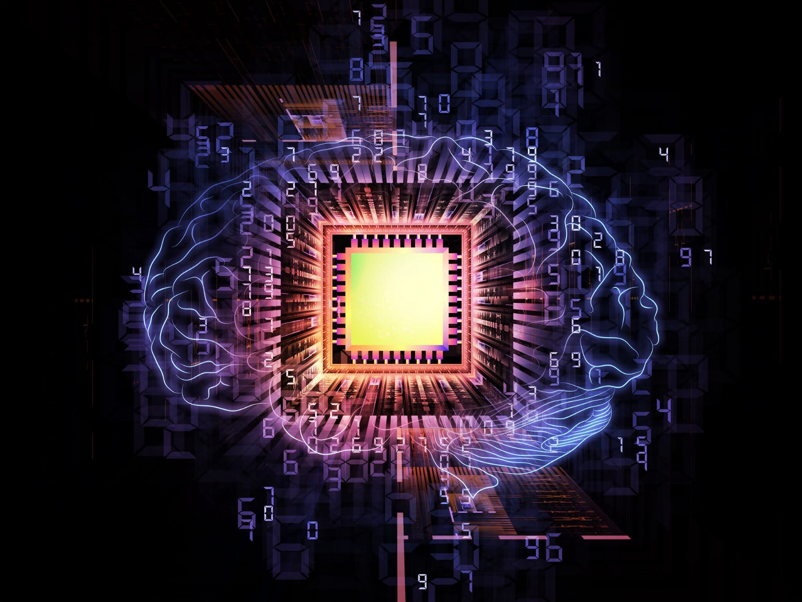
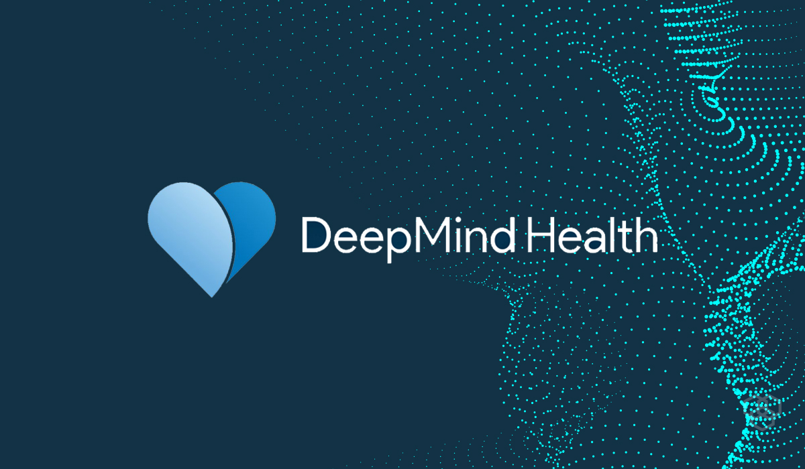

Штучний інтелект (англ. Artificial intelligence, AI) — розділ комп'ютерної лінгвістики та інформатики, що опікується формалізацією проблем та завдань, які подібні до дій, що виконує жива істота, ще є одне визначення — здатність інженерної системи здобувати, обробляти та застосовувати знання та вміння.
У більшості випадків алгоритм розв'язання завдання невідомий наперед. Точного визначення цієї науки немає, оскільки у філософії не розв'язано питання про природу і статус людського інтелекту. Немає і точного критерію досягнення комп'ютером «розумності», хоча перед штучним інтелектом було запропоновано низку гіпотез, наприклад, тест Тюрінга або гіпотеза Ньюелла-Саймона. Нині існує багато підходів як до розуміння задач штучного інтелекту, так і до створення інтелектуальних систем. Одна з класифікацій виділяє два підходи до розробки штучного інтелекту:
***
Ця наука пов'язана з психологією, нейрофізіологією, трансгуманізмом та іншими. Як і всі комп'ютерні науки, вона використовує математичний апарат. Особливе значення для неї мають філософія і робототехніка.
Штучний інтелект — дуже молода галузь досліджень, започаткована 1956 року. Її історичний шлях нагадує синусоїду, кожен «зліт» якої ініціювався деякою новою ідеєю. На сьогодні її розвиток перебуває на «підйомі» і спирається на застосування вже досягнутих результатів в інших областях науки, промисловості, бізнесі та навіть у повсякденному житті.
***
Існують різні методи створення систем штучного інтелекту. У наш час можна виділити 4 досить різних методи:
***

***
***
Штучний інтелект може зробити ваше життя більш комфортним. Саме алгоритми ШІ відповідно до ваших смаків підбирають найкращу музику у Spotify, серіали у Netflix чи відео у Tik-Tok.
Технологію штучного інтелекту використовує і компанія LG у своїх розробках. Так, наприклад, прямо на екрані телевізора LG можна відкрити Home Dashboard та керувати всіма елементами розумного будинку. Завдяки технології ThinQ з технікою можна поговорити. Після фрази "Привіт, LG" діалог можна продовжити як з живою людиною і дати їй команди, наприклад, зменшити температуру в кімнаті чи підказати температуру повітря на завтра. Фразою "Привіт LG. Добрий ранок!" можна увімкнути світло, очищувач повітря та пилосос, або виконати будь-який інший сценарій, який ви запрограмуєте. Так само працює і "Добраніч".

***
Уже щосили штучний інтелект працює у сфері медицини, допомагаючи лікарям діагностувати та лікувати хвороби. Так, наприклад, платформа Watson Health від IBM здатна зареєструвати у пацієнтів рак або проблеми з серцем, DeepMind Health — технологія Google — виявляє деякі хвороби очей та радить, як їх лікувати, а ScanNav допомагає під час УЗД вагітних побачити можливі патології ембріона.

У кінці 2019 року була представлена технологія для оцінки ЕКГ, яка здатна прогнозувати збої серцевого ритму і точніше за лікарів передбачати ризик смерті у пацієнтів. А на початку 2020 компанія Bayer анонсувала співпрацю з Exscientia, що займається пошуком ліків за допомогою штучного інтелекту. В рамках проєкту будуть досліджуватись з'єднання, які потенційно могли б стати ліками для терапії серцево-судинних і онкологічних захворювань.
***
Скоро сферу освіти зовсім не можна буде уявити без штучного інтелекту. Навіть телевізор може підбирати, які програми вмикати дітям, доки батьки чимось зайняті. Розробники додатку Tik-Tok, який стабільно тримає позиції у першій десятці завантажень по світу, своєю чергою запустили два додатки-репетитори, які працюють на основі штучного інтелекту. GuaGuaLong English — для навчання дітей віком від 2 до 8 років англійській мові, та GuaGuaLong Mind — для навчання дітей віком від 3 до 6 років математиці.
Очікується, що незабаром ШІ навчиться повноцінно перевіряти письмові роботи та екзаменаційні завдання, завдяки чому повністю можна буде виключати упередженість або некомпетентність викладачів. Також камери зі штучним інтелектом зможуть аналізувати поведінку учнів: розпізнавати і оцінювати, як учні реагують на різні теми та завдання, наскільки легко співпрацюють один з одним, як працюють поодинці, коли відволікаються і т.д. Звичайно, досі йдуть суперечки з приводу етичності тих чи інших спостережень.
***
Велика ймовірність і того, що вже скоро саме штучний інтелект буде приймати вас на роботу. Уже зараз ШІ змінює сферу HR. Так, ШІ-система HireVue, яка зчитує мовлення, тон голосу, міміку, аналізує отримані дані та видає рекомендації щодо кандидата.
Також існує багато побоювань, що автоматизація та штучний інтелект відберуть у людей їхні робочі місця. Проте, згідно з прогнозами Всесвітнього економічного форуму, до 2022 автоматизація призведе до скорочення 75 млн робочих місць, проте створить 133 млн нових, отже боятися нема чого.